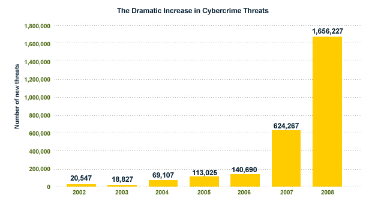
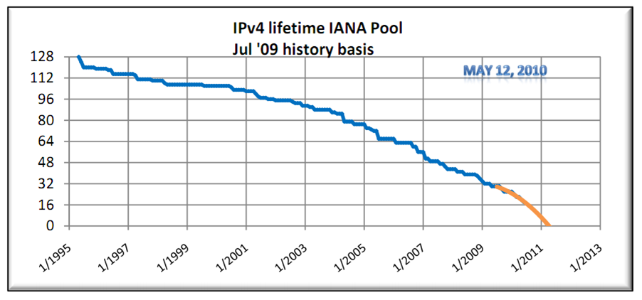
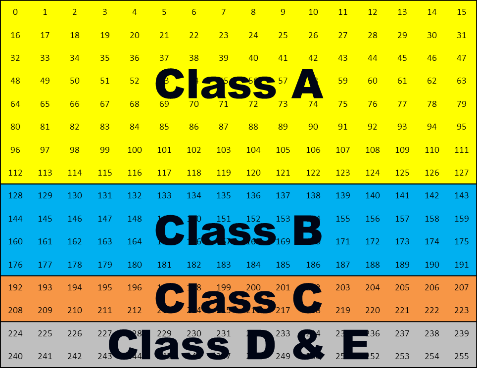
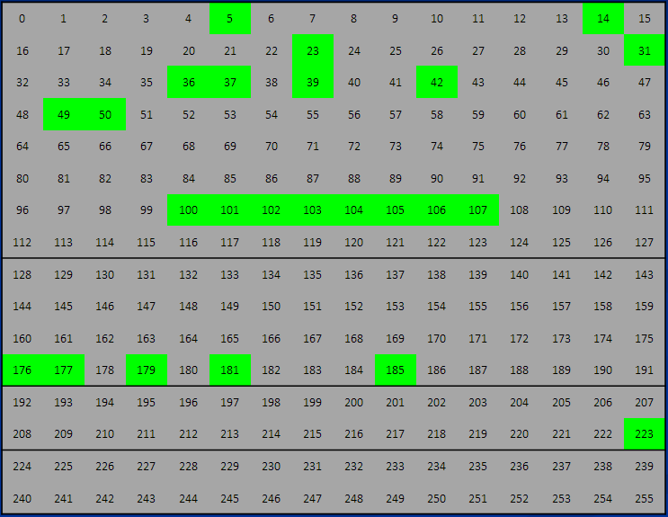
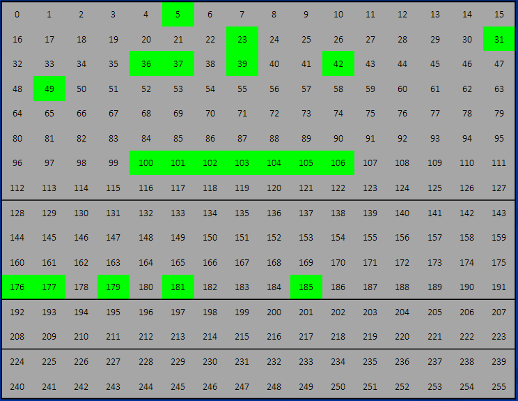
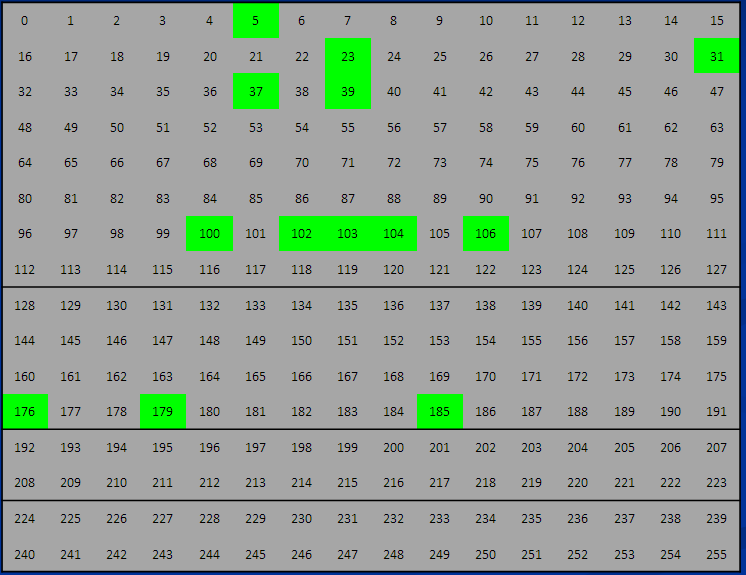
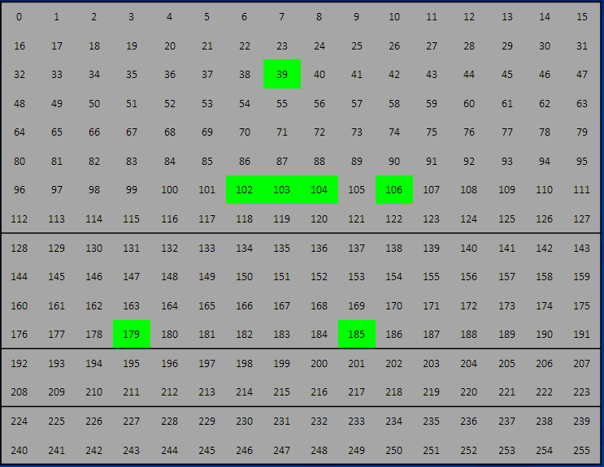

Getting Started with IPv6
Sam Bowne City College of San Francisco
iClicker Survey
How are you enjoying BayThreat?
- Best Con Ever
- Worhtwhile
- Meh
- Might be OK if there were free beer
- I'm Bored/ Disgusted / Outraged
What do you know about IPv6?
- Never heard of it
- Heard of it but never used it
- I understand the address format
- I browser the Web with IPv6
- I have deployed IPv6 on servers, routers, etc
What plans do you have to use IPv6?
- I don't care about IPv6 at all
- I'll implement IPv6, but not for years
- Plannning to implement it within a year
- Planning to implement it sooner than a year
- I am already using IPv6
Busy Year for Security Professionals
Aurora Attacks
- China hacked Google
- Google hacked China
- Everyone is pwned by APT
Stuxnet
- LNK 0Day
- SCADA vulnerability
- Successful military operation against Iran via cyperspace
Cyber crime Growth
- From Symantec, link BayThreat 1
Wikileaks
- Wikileaks "Insurance file and cable releases"
- T3hJ35t3r DoS Attacks on Wikileaks
- DDoS attacks on Wikileaks
- Amazon, Paypal, DynDNS, MasterCard, Visa all throw Wikileaks under the bus
- Anonymous attacks Mastercard, Visa, PayPal, a Swiss banks, a Swedish prosecutor's office, Twitter(?)
Frank Drebin
"Where Are You?"
Forget All That
Because IPv6 is
The End Of The World!
IPv4 Exhaustion
IPv4 Addresses: 32 Bits
- IPv4 address: 192.168.1.10
- Four bytes
- In Binary:
- 11000000 10101000 00000001 00001010
- 232 total addresses
- 4 billion
IPv4 Address Depletion
- Link Baythreat-8
IPv4 Address Space
Jan 21, 2010
Available Blocks: 24

April 10, 2010
Available Blocks: 20

May 8, 2010
Available Blocks: 13

Nov 30, 2010
Available Blocks: 7

2011: The End

- Link BayThreat-7
The End of the World
- No Reprieve
- IANA Will not re-purpose class D or E addresses for general use
- People who ask for IPv4 addresses after exhaustion will not get them
- Hoarding, scalping, and simple direct sale of used Ipv4 addresses will begin soon

IPv6
The Solution
IPv6 Addresses: 128 Bits
- IPv6 address
- 2001:05c0:1000:000b:0000:0000:0000:66fb
- Omitting unnecessary zeroes
- 2001:5c0:1000:b::66fb
- Eight fields, each 16 bits long
- 4 hexadecimal characters
- Eight fields, each 16 bits long
- 2 128 total addresses
- 340 billion billion billion billion
- Enough for a while
- Link BayThreat-10
Federal IPv6 Transition Timeline

- From Cisco (link BayThreat-11)
Executive Summary Thus Far
IPv4 is Full

- Image from zinyaw.files.wordpress.com
IPv6
RESISTANCE IS FUTILE
Migration to IPv6
Methods of IPv6 Migration
- Ignore Ipv6: Stay only IPv4-only
- Gateways: Devices that convert Ipv6 to IPv4
- Tunnel: IPv6 over IPv4
- Dual-Stack: IPv4 and IPv6 together
- Nirvana: IPv6-only
IPv6 Tunnels
- Fast and easy to set up--best for n00bs
- Not the best for security or performance
- Free IPv4-to-IPv6 Tunnels
- Gogo6.com
- Sixxs.net
- Tunnelbroker.com
GoGo6

- Easiest
Demonstration


Companies already on IPv6
- IPv6.google.com
- www.v6.facebook.com
- comcast6.net
- ipv6.cnn.com
- More at link Baythreat - 12
IPv6 Certifications
- Fun, realistic projects
- He.net
- Link BayThreat - 13


IPv6 Sages

- As of 12-9-10
- Link BayThreat - 18
IPv6 Sages at CCSF

- 22 Ipv6 Sages at CCSF so far (12-9-10)
- Link BayTreat - 19
T-Shirt

- #1 motivator for IPv6 Certification
- Link Baythreat - 9
Security Problems

- Used by Ethernet
Privacy Risk
- Anyone who has your IP address also has your MAC address!
- There is a "Privacy Extensions" technique to avoid thi, enabled by default in Vista and Windows 7
ICMPv6
- Required for all networks
- Cannot be blocked
- Replaced ARP
- "Neighbor Discovery" is trivial
THC-IPv6
- Hacker's Toolkit
- Runs fine on Ubuntu, even in VMware on Windows 7
- Instructions: link BayThreat - 14

Other Risks
- Many security appliacnces are not ready for IPv6, so often bypasses them
- Torrents run over IPv6
- LInk BayThreat-15
- Some VPN appliacnes are not ready, so IPv6 connections must bypass them
- Torrents run over IPv6
- Packet Amplification Attacks
- Routing Header Zero
- Ping-Pong
- Links BayThreat-16 and 17
iClicker Survey
What do you think of Wikileaks?
- It's heroic and improving the world
- It does more good than harm
- It's unimportant
- It does mroe harm than good
- It's awful and must be eliminated
What do you think of Anonymous?
- It's heroic and improving the world
- It does more good than harm
- It's unimportant
- It does mroe harm than good
- It's awful and must be eliminated
What do you think of Layer 7 DoS, like SlowLoris or th3J35t3r's XerXes?
- Never heard of it
- It's of no importance
- It's a minor threat
- It's a major threat
- It's my top priority
What plans do you have to use IPv6?
- I don't care about IPv6 at all
- I'll implement IPv6, but not for years
- Planning to implement it within a year
- Planning to implement it sooner than a year
- I am already using IPv6
Contact
- Same Bowne
- Computer Netowrking and Information Technology, City College of San Francisco
- Email: sbowne@ccsf.edu
- Twitter: @sambowne
- This whole talk and all the referenced links are on my Web site: samsclass.info
- In the "Winter Break 2010-2011 Events" section